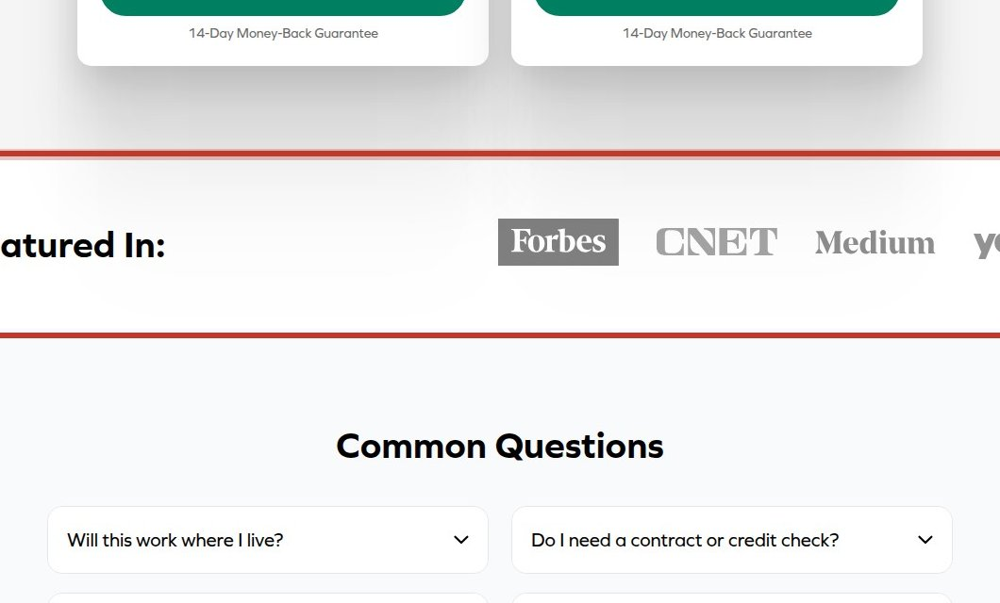
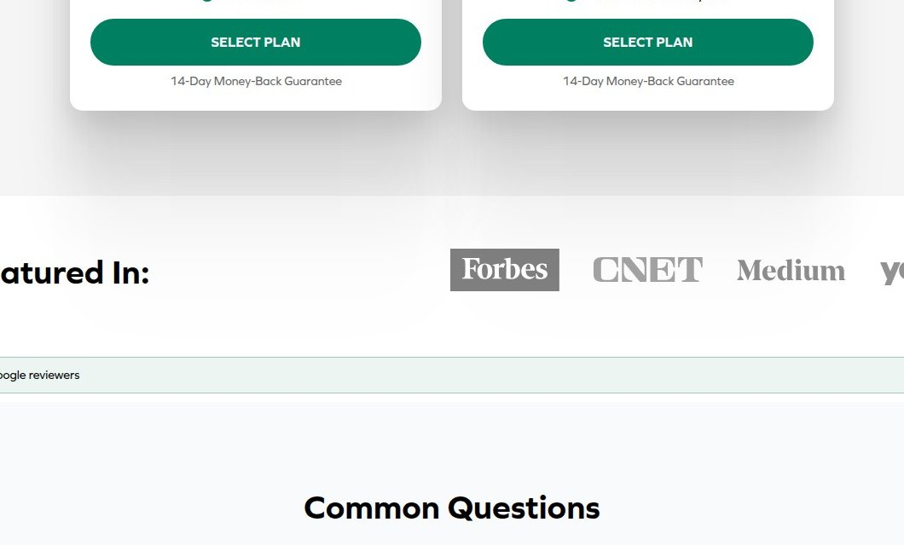

Before & After — click any card for evidence, math and the dev spec
1
Medium
Missing security headers
Three standard security headers are absent, weakening protection against common attacks.
MediumMedium effortMeasured
Full analysis →


2
Medium
Multiple competing primary CTAs
Homepage has seven different CTAs, making the next step ambiguous and diluting conversion focus.
MediumMedium effort
Full analysis →
Homepage
Check your coverage
See what internet options are available at your address.
AddressEnter your address
CHECK MY COVERAGEOr explore other options:
- Watch on
- SEE WHAT I QUALIFY FOR
- START CHAT
✓ Consistent labelOne label everywhere, always advancing to the same next step.
3
Medium
Coverage check appears twice
The same coverage-check action is labeled differently across pages, potentially causing users to restart the journey.
MediumLow effort
Full analysis →


4
Medium
Trust badges not evidenced
Claims like 'As Featured In' lack supporting logos or badges, reducing credibility.
MediumMedium effort
Full analysis →

5
Medium
Weak page metadata
Meta description and Open Graph tags are missing or too short, degrading search and social previews.
MediumMedium effortMeasured
Full analysis →

6
High
No reviews near pricing
Social proof heading exists but no review content appears near pricing, reducing trust at the decision point.
HighLow effort
Full analysis →